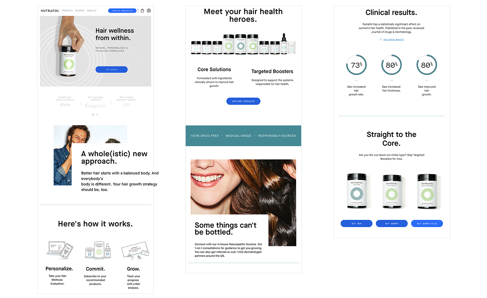

Nutrafol is hair wellness-the tangible, measurable signifiers of hair growth performance and health-company, and our mission is changing the perception about hair. The key to hair wellness is to help balance your whole body to make it a happier environment for hair to grow.
Hair wellness from within.
It is ongoing project that was start from my first day. As the start-up company, our challenge is find the best way to communicate with the customer about our brand & product and provide seamless experience.
After we re-launched our new branding and decided to change our business model from ‘product’ to ‘subscription’ base, it cause confusion for customers. Therefore, customers complained and dropped their orders. We have to find the best way to explain why we want to move to ‘subscription’ model.
Revise user experience that helps customers 1.to understand our new ‘subscription’ model, 2.to educate the customer about ‘How our products work’ and ‘What is different with other brands’ and 3. to bring Amazon customer who purchase single product in our website.
We did a research with our customer and CX team by survey and interview. We want to find why/where customers usually drop their order. In order to define our problem space, we needed to observe deeply with small group. It helped to understand user behavior and what they valued. In addition to user research, we also used diverse research programs such as ‘Suzy’, ‘Google Trends’, and 'Google Analysis'.
From our research, we learned that:
1. Many problems happen in the payment page.
2. There are too many steps customers have to go through to get payment page.
3. It was unclear what we are offering to subscribe customers and why it is better for them.
Our team had brainstorming meeting to create persona from research. We created the persona who will use our product and what is their main concerns–Herc. Herc personified the feature of the targeted audience and helped us understand our customers, their life and frustrations. It helped to learn how we empathize them and built user story map. The main goal was learning what influences a customers decision. We learned from the research that including third party validation and reviews can help to form credibility. Also, we realized the ton of language we are currently using(Serious & Sciencey) may make the barrier.
After we completed our research, we were started to build wireframes and language. Our team was collaborated together on each page. Since our customer’s drop their order, we had to move quickly. We discussed with each team to find which layouts would work best to design our information.
My focus was designing the ‘How it work’ page, helping the wireframe and creating motion grpahics. 'How it work' page is the important page, because it shows what/how we can help customer to achieve hair wellness. I thought it will be helpful to include FAQ under the page so people can understand more in depth. And by creating videos & motion grpahics can give dynamic to the website.
Once we designed Mid-Fidelity wireframes, we started to discuss with development team and make sure they are understand our design and function.
I was really satisfied with what we created within tight deadline. As a designer, it was intense project, but it helped me a lot to understand how to collaborate with every team and customer efficiently. Also, our revenues recover and start to rise. Our new subscription rise 11% compare to relaunch and CTA price goes down.
